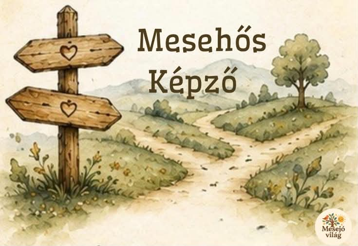

Mesehős Képző
Mit tanulhatunk a mesehősöktől?
7 próba. 7 mesehősi helyzet. Egy saját hősi út.

Van, hogy a gyereked fél elindulni.
Van, hogy egy kudarc után gyorsan feladja.
Van, hogy nehéz segítséget kérnie, döntést hoznia, vagy elhinnie magáról, hogy képes rá.
A Mesehős Képzőben ezekkel a mindennapi helyzetekkel találkozunk – meséken, játékokon, mozgáson és saját élményeken keresztül.
7 próba, amellyel a mindennapokban is találkozhat
- Elindulni akkor is, ha félekBátorság, bizonytalanság, önmagamba vetett hit
- Mihez kezdek, ha nem sikerül?Kudarc, hiba, újrapróbálás
- Feladom vagy keresek másik utat?Kitartás, rugalmasság, kreatív megoldások
- Egyedül kell mindent megoldanom?Segítségkérés, segítség elfogadása, együttműködés
- Miben vagyok én jó?Saját erősségek, önbizalom, önismeret
- Hogyan döntsek, amikor nincs könnyű válasz?Döntés, felelősség
- Mire vagyok képes, ha végigmegyek az úton?Összegzés, sikerélmény, saját hősi út
Nem csak hallgatunk a hősökről. Mi is próbára tesszük magunkat.
Minden alkalom egy újabb állomás a hősi úton.
Egy mese megmutat egy helyzetet.
A gyerekek játékban, mozgásban és kihívásokban saját maguk is megtapasztalják azt.
- Megpróbálják.
- Hibáznak.
- Újrakezdik.
- Segítséget kérnek.
- Másik utat keresnek.
- Döntéseket hoznak.
Közben pedig a Mesejáró térképen is továbbhaladnak.
Mit visz magával a gyerek?
Nem kész válaszokat.
Hanem egy saját, életkorának megfelelő hősi eszköztárat, amelyhez később is visszanyúlhat, amikor hasonló helyzettel találkozik.
És közben megtapasztalhatja:
- „Meg tudom próbálni.”
- „Ha nem sikerül, próbálhatom másképp.”
- „Kérhetek segítséget.”
- „Van, amiben én vagyok jó.”
- „Képes vagyok dönteni.”
A Mesehős Képző útja
- Mesejáró térkép
- Mesék és mesehősök
- Mozgásos és játékos próbák
- Kihívások és saját élmények
- Kreatív feladatok
- Közös gondolkodás és felismerések
A 7 alkalom egymásra épül: a gyerekek nem hét különálló foglalkozáson vesznek részt, hanem végigjárnak egy saját hősi utat.
Kinek szól?
A Mesehős Képzőt olyan 6–10 éves gyerekeknek ajánlom, akiknek jól jöhet, ha játékos, mesés helyzeteken keresztül próbálhatják ki magukat.
Különösen akkor lehet érdekes, ha a gyermeked:
- nehezen indul el új helyzetekben;
- fél a hibázástól vagy a kudarctól;
- könnyen feladja, ha valami nehéz;
- nehezen kér segítséget;
- gyakran bizonytalan abban, hogy mire képes;
- nehezen hoz döntést;
- vagy egyszerűen szeretné jobban megismerni a saját erősségeit.
Mesehős Képző
6–10 éves gyerekeknek
- Kezdés: 2026. október 21.
- Szerda, 17:00–18:30
- Veszprém
- 7 alkalom
Egy út, amelyen nem az a cél, hogy mindig sikerüljön.
Hanem hogy a gyerek megtapasztalja: mit tud tenni, amikor nem sikerül.
Induljon el a saját hősi útján!